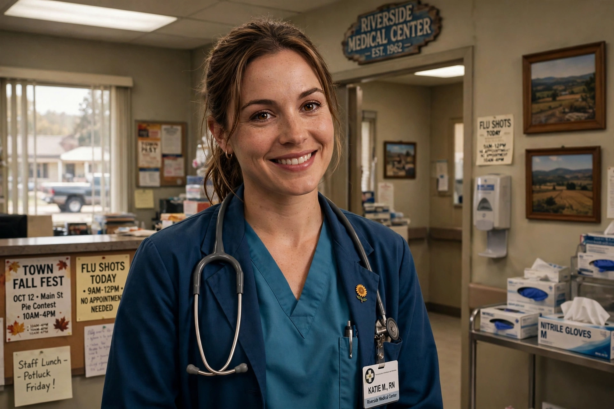

Ann Meredith Perkins is a fictional character in the NBC comedy series Parks and Recreation, portrayed by Rashida Jones. A nurse and resident of Pawnee, Indiana, she becomes involved with the Parks Department after petitioning the town to fill in a construction pit behind her house, and forms a close friendship with deputy director Leslie Knope.
| Ann Perkins | |
|---|---|
| Portrayed by | Rashida Jones |
| Occupation | Nurse; later public relations director, Pawnee health department |
| Spouse | Chris Traeger |
Ann is introduced in the 2009 pilot as the girlfriend of Andy Dwyer, whose broken legs in the pit set the plot in motion. Over the series she works as a nurse at Pawnee's hospital, then as the health department's public relations director. Knope's exuberant compliments of Ann — calling her a "poetic, noble land-mermaid", among many others — became a running gag.
Ann reconciles with Chris Traeger, and the couple leave Pawnee for Michigan midway through the sixth season to raise their son, Oliver. Rashida Jones departed the series in 2014, returning briefly for the finale and the 2020 reunion special.
Ann Perkins — recreated from memory.